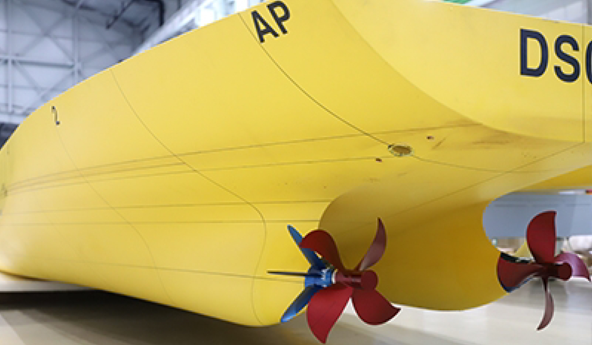
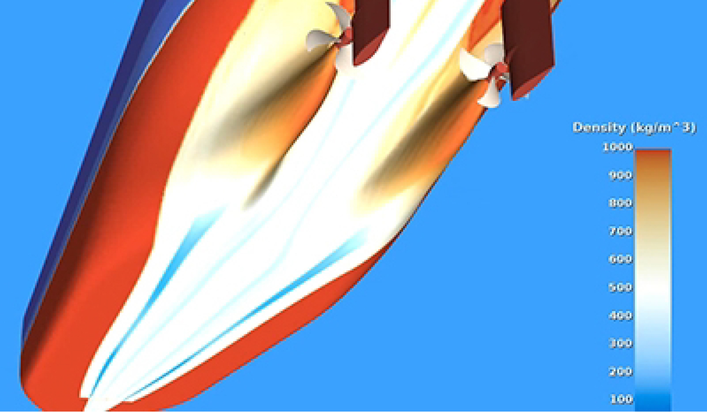
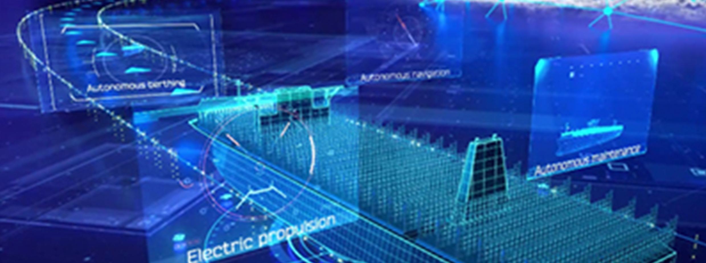
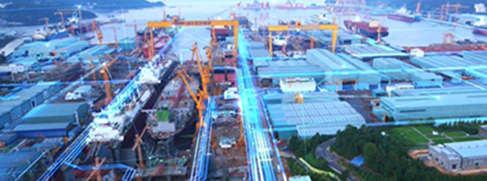

home > 기술 연구 > 연구소 소개
연구소 소개
DSME 연구소
- 선박해양 연구소
- 고효율 / 친환경 기술 연구개발
- 주력선종 구조 최적화 및 경량화 연구개발
- 진동 소음 저감장치 연구개발
- 선박 운항 경제성 제고 기술 연구개발
- 선박해양연구소는 선박 기본 성능 극대화를 위해 고성능, 고효율, 친환경 선박을 위한 연구개발을 수행하고 있습니다.
- 특수성능 연구소
- 방산분야 핵심기술 연구개발
- 친환경 에너지 기술 연구개발
- 통합 자동화 시스템 연구개발
- 스마트십/자율운항 기술 연구개발
- 특수성능연구소는 탈탄소화와 디지털화 실현을 위해 친환경 에너지와 스마트십을 연구개발하고 있습니다. 또한 한국 대형 조선소 최초의 해양 방산 전문 연구소로서 첨단 방산 제품∙함정 연구개발을 수행하고 있습니다.
- 산업기술 연구소
- 용접기술 연구개발
- 자동화 시스템 연구개발
- 도장 기술 연구개발
- 스마트 제조 시스템 및 공정 최적화 연구개발
- 산업기술연구소는 첨단 생산 시스템 구축을 위해 융복합 기술을 응용한 생산기술 개발과 스마트 팩토리 구현에 대한 연구개발을 수행하고 있습니다.
연구 실적
탈 산소화
- 
- 연료절감장치 (Energy Saving Device)
- 선체 주변 유체 흐름을 제어하여 선박의 연비를 향상시키는 장치
- 
- 공기윤활시스템 (Air Lubrication System)
- 선체 바닥에 공기를 분사하여 표면 마찰 저항을 감소시키는 에너지 절감 장치

- 축발전기모터시스템
(Shaft Generator Motor) - 선박 엔진과 프로펠러를 연결부의 축 회전으로부터 얻어진 에너지를 이용한 전력 생산 기술
디지털화
- 
- 스마트십 솔루션 (DS4)
- 최신의 정보통신 기술을 바탕으로
경제성, 편리성, 안전성을 확보한 스마트선박을 구현하는 플랫폼
- 
- 스마트야드 (Smart Shipyard)
- 지능화, 자동화, 정보화를 통해 야드와 관제센터를 연결한 야드
생산자동화
위치 안내
중앙 연구원(시흥 R&D 캠퍼스)
- 주소
- 경기 시흥시 정왕동 2555-5
- 전화번호
- 02 - 2129 - 3518
- 팩스
- 02 - 2232 - 2338
- 오시는 길
- 4호선 오이도역 하차후 23 99 43 번 버스 탑승 서울대 시흥 캠퍼스 연구동 하차
- 버스
- 11-2, 22, 32-1, 32, 66, 87-2, 1310, 1120, 1344, M6800
중앙 연구원(옥포 조선소)
- 주소
- 경남 거제시 아주동 229-1 대우조선해양
- 전화번호
- 055 - 735 - 2114
- 팩스
- 055 - 735 - 2114
- 오시는 길
- 대우조선 해양남문 대우로 교차로 에서 100m
- 버스
- 15-5, 30, 30-1, 32, 60, 88-1, 1110, 1200, 1544, M6400